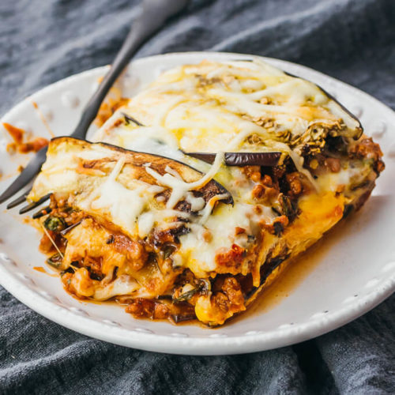

Lasagna

Descripción:
Deliciosa Lasagna hecha con amor desde el seno de Italia.
Receta para 6 personas
Ingredientes:
- 1 cuchara grande de aceite de oliva
- 1 cebolla mediana cortada en cubitos
- 450g de salsa picante italiana
- 1 morrón mediano, cortado en cubitos
- 2 tazas de hongos cortados
- 650g de salsa Ragú
- 255 de laminas de lasagna, sin hervir, rotas en trozos grandes
- 1 taza de agua
- 1/2 taza de rosmary triturado
- 225g de ricota
- 225g de muzzarella trozada y distribuida
- 2 cucharas de perejil fresco triturado
Elaboración
-
Calentar una sartén grande a fuego medio-alto y añadir aceite de oliva.
Remover para cubrirlo. Añadir la cebolla y saltear hasta que esté transparente,
unos 5 minutos. Añadir la salchicha, el pimiento rojo y los champiñones;
saltear hasta que la carne esté bien cocida, unos 5 minutos.
-
Incorpore la salsa Ragú tradicional, las laminas de lasagna rotas, el agua y el romero.
Tapa y baja el fuego a medio-bajo.
-
Cocer durante 20 minutos, removiendo de vez en cuando, hasta que la pasta esté al dente.
Retire la tapa y añada la ricotta, 2/3 del queso y el perejil; remueva para combinar.
Cubra con la mozzarella restante y sirva inmediatamente.
Volver al inicio